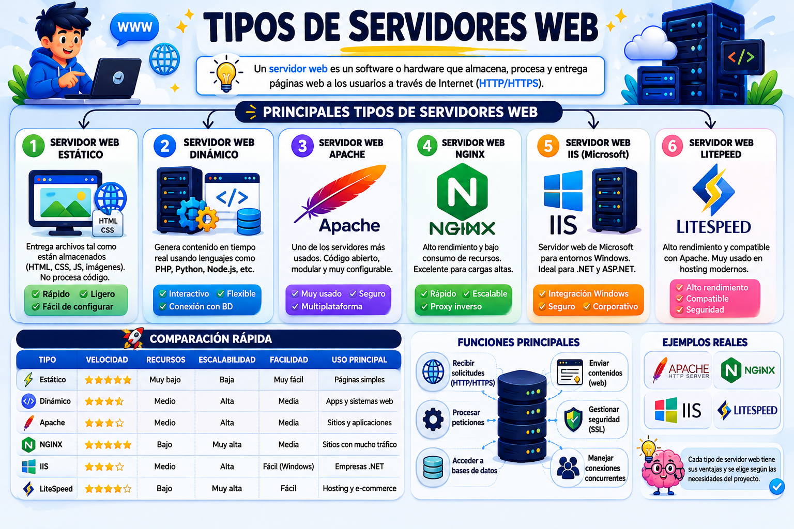

Tema III
Un servidor web es un programa o equipo informático que almacena los archivos de una página web y los envía al navegador del usuario (como Chrome o Safari) cuando este los solicita a través de Internet.
¿CUÁLES SON?
El software de servidor web procesa las peticiones de los clientes (navegadores) y devuelve código ejecutable o estático:
Apache HTTP Server: El servidor histórico y más extendido. Basado en una arquitectura modular procesal. Destaca por su alta flexibilidad mediante archivos de configuración locales llamados .htaccess.
Nginx: Diseñado con una arquitectura asíncrona orientada a eventos. Es extremadamente eficiente manejando miles de conexiones simultáneas con un consumo mínimo de memoria RAM. Se utiliza masivamente como servidor web estático y como Proxy Inverso o balanceador de carga.
LiteSpeed: Alternativa comercial de alto rendimiento compatible con las reglas de Apache. Procesa PHP a velocidades récord gracias a su arquitectura optimizada y sistemas avanzados de caché nativos (LSCache).
Microsoft IIS (Internet Information Services): Servidor propietario integrado en Windows Server. Ofrece integración nativa absoluta con aplicaciones desarrolladas en entornos .NET y bases de datos SQL Server.

El hosting representa el modelo de comercialización e infraestructura física donde corre el servidor web:
Hosting Compartido (Shared Hosting): Cientos de sitios web comparten los recursos (CPU, RAM, IP) de un solo servidor físico. Es económico, pero el rendimiento de tu web puede verse afectado si los sitios vecinos sufren picos de tráfico ("Efecto vecino ruidoso").
VPS (Servidor Virtual Privado): Un servidor físico se divide mediante virtualización en múltiples particiones aisladas. Cada cliente dispone de recursos dedicados de CPU y RAM, acceso raíz (root) y un sistema operativo independiente.
Servidor Dedicado: Un servidor físico completo y exclusivo para un único cliente. Brinda control total sobre el hardware, máxima potencia y seguridad, ideal para grandes empresas o aplicaciones masivas.
Cloud Hosting: La infraestructura web se distribuye en un clúster de servidores interconectados en la nube (ej. AWS, Google Cloud, Azure). Si un servidor físico falla, otro toma su lugar al instante, permitiendo una escalabilidad inmediata.